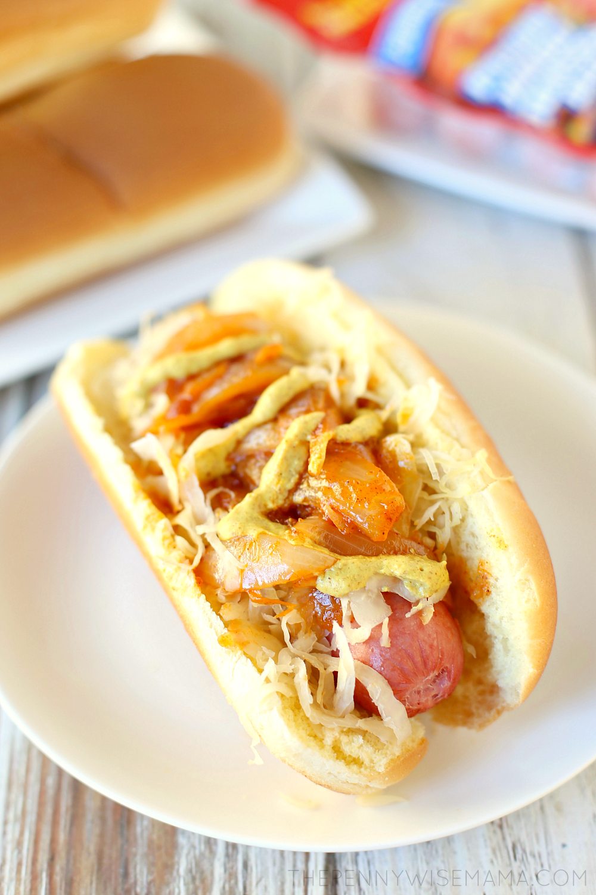

Hotdogs
Back to Home

Description"
Featuring an all-beef hot dog, sauerkraut, onion sauce and spicy brown mustard, the New York Pushcard Hot dog is delicious and full of flavor. A must try!
Ingredients
- 6 jumbo or bun length beef hot dogs
- 2 tbsp olive oil
- 2 medium onions, sliced
- 1/2 tsp ground cinnamon
- 1/2 tsp chili powder
- pinch of cayenne pepper
- 1/4 cup ketchup
- 1/2 cup water
- 1 cup sauerkraut
- spicy brown mustard, to taste
- 6 hot dog buns
Steps
- Heat oil in a medium saucepan over medium heat. Add onions and saute until soft. Stir in the cinnamon, chili powder and cayenne pepper and cook for 1 minute.
- Add ketchup and water and stir until well combined. Bring to a simmer and cook until the sauce thickens, about 10 to 15 minutes.
- While the onion sauce is cooking, boil hot dogs for 5-6 minutes over medium-high heat.
- Put hot dogs in buns and top with sauerkraut, onion sauce and spicy brown mustard.
- Enjoy!